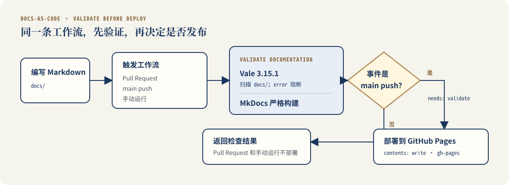

GitHub Actions：让检查通过后再发布文档
这页解决什么问题
流水线复盘说明了这次修改从哪里开始、我怎样做取舍并核对证据。这一页只展开真实配置：检查如何触发，Vale 与 MkDocs 怎样组成验证任务，为什么 Pull Request 不发布，以及 main 更新后如何满足部署条件。
仓库原来有两条互不依赖的工作流：一条只用 Vale 检查 test.md，另一条在 main 更新后独立发布 MkDocs 站点。Agent 检查整个仓库后指出了这处空档，并协助完成修改。
工作流概览

Pull Request 只验证，不发布。只有 main 分支上的 push 能够进入部署任务，而且该任务声明了 needs: validate。
关键设计
| 决策 | 实现 | 原因 |
|---|---|---|
| 扫描真实文档 | files: docs |
避免只检查演示文件 |
| 不按本次改动过滤报告 | filter_mode: nofilter |
报告当前快照中未改动页面或行上的 error；不会扫描 Git 历史提交 |
| error 阻断 | fail_on_error: true |
error 存在时让验证任务失败 |
| 使用 Vale Action | 固定到 v2.1.2 的完整 commit SHA | 避免 Vale Action 的标签指向发生变化 |
| 固定 Vale 版本 | version: 3.15.1 |
降低不同运行之间的结果漂移 |
| 提交规则快照 | styles/ 作为规则来源 |
更新规则时可以单独审查 diff |
| 固定顶层文档依赖 | mkdocs-material==9.7.6 |
本地和 CI 安装相同的 MkDocs Material 版本 |
| 严格构建 | mkdocs build --strict |
把 MkDocs 构建 warning 纳入验证 |
| 发布依赖验证 | needs: validate |
验证失败时不进入部署任务 |
| 分开授权 | 仓库内容默认只读；验证任务使用 checks: write；部署任务使用 contents: write |
验证任务可以回传检查结果，只有部署任务可以更新 gh-pages |
目前固定了 Vale Action、Vale 版本和顶层 MkDocs Material 依赖。actions/checkout@v4、actions/setup-python@v5 仍然使用 major tag，传递依赖也没有 lockfile。
触发条件
on:
push:
branches:
- main
pull_request:
workflow_dispatch:
pull_request：在合并前提供统一验证结果；push到main：重新验证，通过后发布；workflow_dispatch：手动运行验证。
手动运行不会发布，因为部署任务还会检查事件类型和分支。失败的 Pull Request 是否能够合并，仍取决于仓库的分支保护和 required checks 设置。
验证任务
验证任务依次执行：
- 拉取仓库；
- 安装 Python 3.12；
- 根据
requirements-docs.txt安装 MkDocs Material； - 使用 Vale 3.15.1 扫描
docs/； - 使用严格模式构建站点。
核心配置如下：
- name: Check writing style with Vale
uses: vale-cli/vale-action@85f9f7f2c5f449ac0ae5b66662961bae3f77ca6a # v2.1.2
with:
version: 3.15.1
files: docs
fail_on_error: true
filter_mode: nofilter
reporter: github-check
- name: Build documentation
run: mkdocs build --strict
Vale 会报告 suggestion、warning 和 error。当前只因 error 让任务失败，warning 和 suggestion 继续作为改进信号显示。
发布任务
if: github.event_name == 'push' && github.ref == 'refs/heads/main'
needs: validate
第一行限制事件和分支，第二行建立任务依赖。两项同时满足，部署任务才会运行。
发布需要向 gh-pages 分支写入生成内容，因此只有部署任务获得 contents: write。验证任务另有 checks: write，用于回传检查结果：
permissions:
contents: write
本地复现
先安装仓库指定的文档依赖：
python -m pip install --requirement requirements-docs.txt
再确认 Vale 版本并执行检查：
vale --version
vale docs
mkdocs build --strict
要复现本页记录的 Vale 数字，需要使用 Vale 3.15.1。系统包管理器可能安装其他版本，所以版本输出也是验证记录的一部分。
本地和 CI 不必逐项相同，但差异必须被看见。本页的 Windows 复现使用 Python 3.13.5；GitHub Actions 使用 Python 3.12。两边都通过只能说明这两个已记录环境通过，不能扩展成所有环境都通过。
20 条 error 的处理记录
Vale 3.15.1 对 385d72c 快照执行全量检查，可以复现 20 条 error：
| 规则 | 数量 | 位置与处理 |
|---|---|---|
Vale.Spelling |
12 | OAuth、boolean、人名等合法术语加入项目词汇表 |
Google.EmDash、Microsoft.Dashes |
4 | 两个版本标题分别触发两套规则，改用中文括号 |
MyStyle.Spacing |
3 | 写作指南中的故意错误示例改为代码文本 |
Microsoft.Contractions |
1 | 将含 Cannot 的英文标题改成中文 |
Vale 3.15.1 CLI 只报告文件、行号、规则和严重程度，不会自动修改文件。Agent 根据输出实施修改，再重新运行检查。.vale.ini 的 MinAlertLevel 仍为 suggestion；本次 error 清零来自实际修改和重新检查。
验证记录
| 对象 | 环境或事件 | 结果 |
|---|---|---|
385d72c 快照 |
Vale 3.15.1 | 44 文件；20 error、100 warning、196 suggestion |
d204aef 快照 |
Windows；Vale 3.15.1 | 44 文件；0 error、69 warning、181 suggestion |
d204aef 快照 |
Python 3.13.5；MkDocs Material 9.7.6 | 严格构建通过 |
| PR Actions | Pull Request | Validate 成功，Deploy 跳过 |
main Actions |
main push |
Validate 和 Deploy 均成功 |
失败时先看哪里
| 失败步骤 | 优先检查 |
|---|---|
| 安装依赖 | requirements-docs.txt 是否存在，指定版本是否可用 |
| Vale | Vale 版本、文件、行号、规则名和 alert level |
| MkDocs 严格构建 | 导航路径、内部链接、YAML 配置和构建 warning |
| 发布 | 事件是否为 main push、验证任务是否成功、写权限是否存在 |
在记录的 main 成功运行中，Validate 和 Deploy 两个任务各有一条 Node.js 20 弃用 warning，每条均列出 actions/checkout@v4 和 actions/setup-python@v5。它们没有让这次运行失败，后续仍需处理。